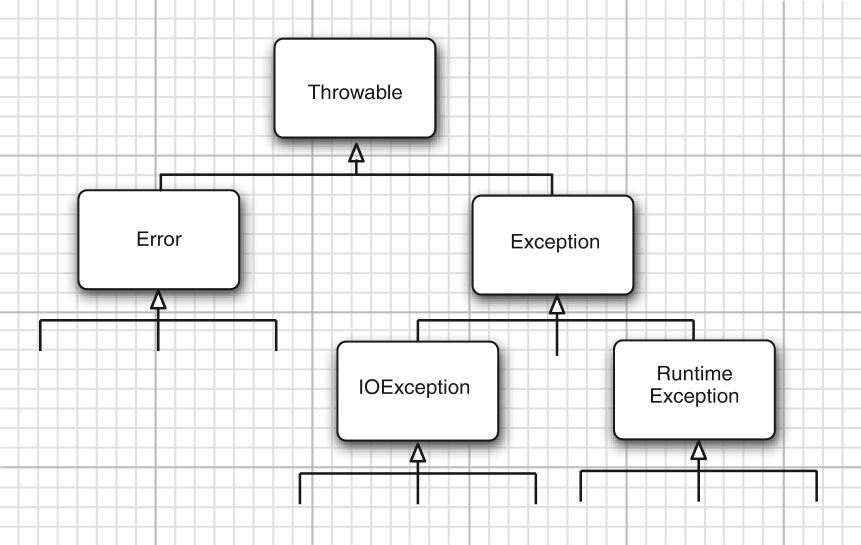

异常
异常分类
异常对象都是派生于throwable类的实例:

- Error类说明java运行时存在内存错误或资源耗尽错误,出现这类错误,除了告诉用户,别无他法
- Exception是需要关注的;它又分为RuntimeException和IOException
如果出现了RuntimeException,那么一定是你自己的问题
Error类或RuntimeException类的所有异常称为非受查(uncheck)异常,其他的异常成为受查(check)异常
受查异常
需要记住在以下情况中应该抛出异常:
- 调用一个抛出受查异常的方法时,如:FileInputSteam构造器
- 程序运行时发现错误,利用throw抛出一个受查异常
- 程序出现错误时,如:数组越界(ArrayIndexOutOfBoundsException)
- java虚拟机和运行时库内出现的内部错误
如果出现前两种异常之一,则必须告诉程序员调用这个方法可能会出现的异常,如果没有处理器捕获,当前执行的线程就会结束
对于可能被其他人调用的方法,应根据异常规范(exception specification),在方法首部声明者个可能的的异常:
|
|
但是,无需声明java的内部错误,我们无法控制Error.
同样,不应该声明从RuntimeException继承的非受查异常:
|
|
这些异常完全在我们的控制之下,与其去说明异常,我们更应该将精力花费在修改程序上
总之,一个方法必须声明可能抛出的受查异常,非受查异常要么是错误(Error),要么是可以避免发生的RuntimeException
注意:
- 如果在子类中覆盖了一个父类的方法,子类声明的受查异常不可比父类的方法中声明的异常更为通用.
- 如果父类方法没有抛出任何受查异常,那么子类也不能抛出任何受查异常
抛出异常
对于一个已知的异常类:
找到一个合适的异常类
创建这个类的对象
将对象抛出
|
|
一旦方法抛出了异常,该方法就不会返回给调用者,我们就不必再为返回的默认值或错误代码担忧
创建异常
|
|
习惯上,定义的类包含两个构造器,一个是无参构造器,另一个是带有详细描述的构造器(父类Throwable的toString方法将会打印出详细信息)
自定义构造器代码例:
|
|
捕获异常
|
|
如果在try语句块中抛出了在catch语句块中说明的异常类,那么:
- 程序将跳过try语句块其余的代码
- 执行catch子句中的处理代码(如果在try中没有抛出任何异常,跳过catch子句)
如果方法中任何代码抛出了在catch中没有声明的异常,那么这个方法会立即退出
代码说明:
|
|
read方法可能抛出一个IOException,这将会跳出while循环,进入catch子句,并声称一个栈轨迹(stack trace)
通常,最好的办法是什么也不做,而是将异常传给调用者,让调用者去操心怎么做,如果采用这种方式,就必须声明这个方法可能会抛出的异常:
|
|
捕获多异常
|
|
在JKD1.7之后,可以这样捕获异常:
|
|
注意:捕获多个异常时,异常的变量为final
捕获多个异常不仅会使代码看起来更简洁,而且会使代码运行效率更快
finally语句
不管是否有异常被捕获,finally子句都必将被执行:
|
|
1).代码没有抛出异常.执行:1.2.5.6
2).抛出一个可以在catch中捕获的异常:
- 如果catch没有抛出异常,执行:1.3.4.5.6
- 如果catch子句抛出一个异常,执行:1.3.5(异常被抛会给方法调用者)
3).代码抛出一个异常,但没有catch可以捕获到,执行:1.5
因此,finally子句是无论如何都会执行的,下面的例子会有令人意外的结果:
|
|
调用f(2),try子句return结果r = 4,但是finally必然执行,return 0并覆盖 r = 4.